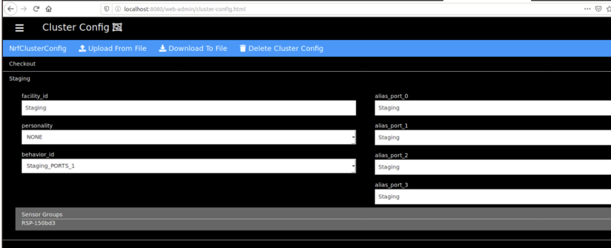

Configuration
RTSF at Checkout Configuration
Scale Device Service
The security scale used in this reference design is the CAS PD-2 POS/Checkout Scale which communicates over a serial connection. The vid:pid values of the scale are VID = "0403" and PID = "6001". These values change depending on the model of scale you are using. If you use a different scale, the logic to read and write to the scale will most likely be different. In this case, simply use this service as a reference for creating your custom Scale Device Service.
The following items can be configured via the Driver section of the service's configuration.toml file. All values are strings.
- ScaleVID - VID value for the scale
- ScalePID - PID value for the scale
- ScaleID - ID of the scale
- LaneID - ID of the checkout lane the where the scale is being used
- TimeOutMilli - Time out for when reading from the scale in milliseconds
EdgeX MQTT Device Service
This reference design uses the MQTT Device Service from EdgeX with custom device profiles. These device profiles YAML files are located at https://github.com/intel-iot-devkit/rtsf-at-checkout-reference-design/rtsf-at-checkout-reference-design/tree/master/loss-detection-app/res/device-mqtt-go and are volume mounted into the device service's running Docker container.
The service's configuration.toml file has been customized to add the devices to the DeviceList section for each device profile and the following Driver section settings have been customized:
- IncomingTopic - Subscribe topic for the incoming MQTT Broker
- IncomingHost - Host name of the incoming MQTT Broker
- IncomingPort - Port number of the incoming MQTT Broker
- IncomingUser - Username for the incoming MQTT Broker
- IncomingPassword - Password for the incoming MQTT Broker
- IncomingClientId - Client ID for the incoming MQTT Broker
- IncomingKeepAlive - Keep alive duration for the incoming MQTT Broker
- ResponseTopic - Subscribe topic for the response MQTT Broker
- ResponseHost - Host name of the response MQTT Broker
- ResponsePort - Port number of the response MQTT Broker
- ResponseUser - Username for the response MQTT Broker
- ResponsePassword - Password for the response MQTT Broker
- ResponseClientId - Client ID for the response MQTT Broker
- ResponseKeepAlive - Keep alive duration for the response MQTT Broker
EdgeX REST Device Service
This reference design uses the REST Device Service [TODO: Update link] from EdgeX Foundry with custom device profiles. These device profiles YAML files are located at https://github.com/intel-iot-devkit/rtsf-at-checkout-reference-design/rtsf-at-checkout-reference-design/tree/master/loss-detection-app/res/device-rest-go and are volume mounted into the device service's running Docker container.
The service's configuration.toml file has been customized to add the devices to the DeviceList section for each device profile.
Intel RSP RFID Solution
This reference design uses the Intel Retail Sensor Platform (RSP) . Once installed you need to configure the custom facility ids by navigating to the web portal at http://localhost:8080/web-admin/.
Then navigate to the Cluster Config section using the dropdown menu and upload a custom cluster config file.
Below is an example of two facilities Staging and Checkout.
{ "id":"NrfClusterConfig", "clusters":[ { "id":"Staging", "personality":null, "facility_id":"Staging", "aliases":[ "Staging", "Staging", "Staging", "Staging" ], "behavior_id":"Staging_PORTS_1", "sensor_groups":[ [ "RSP-150acc" ] ] }, { "id":"Checkout", "personality":"EXIT", "facility_id":"Checkout", "aliases":[ "Checkout", "Checkout", "Checkout", "Checkout" ], "behavior_id":"Checkout_PORTS_1", "sensor_groups":[ [ "RSP-152419" ] ] } ] }
Below is what the new configuration should look like.

RSP Controller Event Handler
This service filters events from the RSP Controller and transforms them into a format that’s consumable by the Checkout Event Reconciler. The RSP Controller device name and the value descriptor for the events must be configured in the ApplicationSettings configuration section as follows:
-
DeviceNames = “RSPController”
-
ValueDescriptorToFilter = “EventsJSON”
[TODO: Update code for device name change and to Push data with device name = rfid-roi-rest , reading name = rfid-roi ]
CV ROI Service & Video Analytics Pipeline
CV consists of two components video-analytic and cv-region-of-interest. *video-analytic runs and maintains the CV pipelines. cv-region-of-interest configures the pipelines, collects the frame by frame CV data and generates the CV ROI Events to send to EdgeX.
To configure the VAP pipeline you need to set the following environment variables in the docker-compose file under cv-region-of-interest. All the values other than the MQTT_DESTINATION_HOST are in the form CAMERA{N} where N is the camera number starting with 0.
In the docker-compose.vap.yml file under the environment section of cv-region-of-interest
- MQTT_DESTINATION_HOST - the destination of the MQTT broker, to use the MQTT broker running in the compose file simply just use
mqtt:1883 - CAMERA{i}_ENDPOINT - the destination of the pipeline resource you wish to run the analytics on. Use http://video-analytic:8080 to hit the container running the VAS software then just add the route to the pipeline you are targeting.
- CAMERA{i}_SRC - the path to the camera either RTSP or the Linux path to the camera resource
- CAMERA{i}_ROI_NAME - the name of the ROI location this camera represents, this is a configurable parameter of the reconciler also and these ROI locations will need to match what is defined there as well.
-
CAMERA{i}_CROP_TBLR - the camera’s crop number of pixels to cut from the top, bottom, left, right. Try and crop the camera to just include the ROI of interest.
-
CAMERA{i}_PORT - the port that VAP will re-stream the live camera feed to with the crop and object detection overlays
Here is an example configuration for one camera
environment: - MQTT_DESTINATION_HOST=mqtt:1883 - CAMERA0_ENDPOINT=http://video-analytic:8080/pipelines/object_detection_cpu_render/1 - CAMERA0_SRC=rtsp: rtsp://{username}:{password}@{ip} - CAMERA0_ROI_NAME=Staging - CAMERA0_CROP_TBLR=245,210,260,800 - CAMERA0_PORT=7001
For the video-analytic service the following configuration is needed. Adding the device /dev/dri:/dev/dri which mounts the GPU is optional.
environment: DISPLAY: ${DISPLAY} devices: - /dev/dri:/dev/dri volumes: - /tmp/.X11-unix:/tmp/.X11-unix - ./pipelines:/pipelines - ./models:/models
For additional support see the Video Analytics Serving repo https://github.com/intel/video-analytics-serving.
Product Lookup
Product information values are stored in a JSON file. This inventory is used to lookup product information such as the product name, barcode, maximum and minimum weights and whether a product is RFID eligible.
Example product lookup inventory is shown below:
[{ "barcode": "00022000008916", "name": "Extra Peppermint Gum", "min_weight": 0.102, "max_weight": 0.109, "rfid_eligible": true }, { "barcode": "00051700988235", "name": "Finish Dishwasher Tablet", "min_weight": 0.610, "max_weight": 0.620, "rfid_eligible": false }, { "barcode": "00012000163173", "name": "Mountain Dew 6 Pack", "min_weight": 3.200, "max_weight": 3.255, "rfid_eligible": true }, { "barcode": "00024000566670", "name": "Canned Green Beans", "min_weight": 1.025, "max_weight": 1.050, "rfid_eligible": false }]
Checkout Event Reconciler
The following Checkout Event Reconciler service settings can be configured. All these settings are contained in the service’s ApplicationSettings configuration section. All values are strings.
-
DeviceNames - Comma separated list of device names that the service filters incoming data for. These correspond to the device names defined by the device services.
-
DevicePos - Name of the device that the POS events are received from. Must be one of the device names listed in DeviceNames above.
-
DeviceScale - Name of the device that the Scale events are received from. Must be one of the device names listed in DeviceNames above.
-
DeviceCvRoi - Name of the device that the CV ROI events are received from. Must be one of the device names listed in DeviceNames above.
-
DeviceRfidRoi - Name of the device that the RFID ROI events are received from. Must be one of the device names listed in DeviceNames above.
-
CvTimeAlignment - The time period between when a product was scanned at the POS and when it was seen by CV. This is to allow for lag between CV and the time of scan, items are reconciled only if they are within this time window, otherwise they will remain unreconciled. Values are in time duration format i.e. “5s” or “5ms” and negative values allow for an unlimited CV reconciliation window.
-
ProductLookupUrl - URL for the Product Lookup service
-
WebSocketPort - Port number for the WebSocket that the service write data. Useful for connecting UI to receive the reconciler data.
-
ScaleToScaleTolerance - Allowable difference in weight values from the scanner scale and the security (bagging) scale. Required when product quantity is a weight. Value is a fraction of LBS., I.e. “0.02”
Loss Detector
The following Loss Detector service settings can be configured. All these settings are contained in the service’s ApplicationSettings configuration section. All values are strings.
-
NotificationsURL - URL of the EdgeX Support Notifications Service
-
NotificationEmailAddresses - Comma separated list email addresses to send notifications
-
NotificationSlug - Unique identifier used to subscribe with the EdgeX Support Notifications Service to send notifications
In addition to the above configuration items, the EdgeX Support Notifications Service must also be configured. This is done via environment variables in the docker-compose.edgex.yml compose file for the config-seed service. This reference design uses a development SMTP service running is a local docker container. The following config-seed environment variables must be changed when using a real SMTP service for a complete RTSF at Checkout solution:
-
Smtp_Host - The of the host running the SMTP service.
-
Smtp_Port - Port number of the SMTP service running on the above host
-
Smtp_Subject - Subject to use for the email notifications
These environment variables are currently set as follows in docker-compose.edgex.yml compose file:
environment: <<: *common-variables Smtp_Host: smtp-server Smtp_Port: 25 Smtp_Subject: EdgeX Notification Suspect List
Checkout Event Simulator
The checkout event simulator configuration contains RESTful endpoints and MQTT endpoint to send the simulated data and MQTT topic. These settings are contained in the config.json file.
[TODO: Update simulator to use these settings and support RFID vs RFID ROI]
{ "pos_endpoint": "http://localhost:59990/api/v1", "scale_endpoint": "http://localhost:59990/api/v1", "cv_roi_endpoint": "http://localhost:59990/api/v1", "rfid_roi_endpoint": "http://localhost:59990/api/v1", "rfid_events_endpoint": "tcp://localhost:1883" }